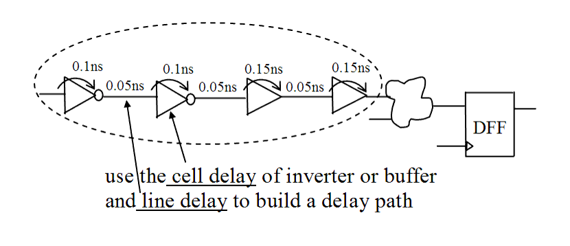

| Description | This rule fires when Leda detects a delay line in the design. A delay line is defined as a data path that contains only buffers or inverters. You may need to confirm delay lines in some cases. You can use the rule_set_parameter Tcl command and the IDENTICAL_CELLS_NB parameter to specify the number of inverters or buffers in a path that qualify it as a delay line. The default value is 3. For example:
leda> rule_set_parameter -rule NTL_STR28 \
-parameter IDENTICAL_CELLS_NB -value {5}
|
| Policy | DESIGN |
| Ruleset | STRUCTURE |
| Language | VHDL/Verilog |
| Type | Hardware |
| Severity | Error |
This is an example of invalid Verilog code, followed by a circuit diagram that illustrates the problem:
module ntl_str28_top; ... wire net_01, net_01_inv1, net_01_inv2, net_01_buf3, net_01_buf4; not I0(net_01_inv1, net_01); not I1(net_01_inv2, net_01_inv1); buf I2(net_01_buf3, net_01_inv2); buf I3(net_01_buf4, net_01_buf3); // NTL_STR28 fires -- delay line (default > 3) ... endmodule